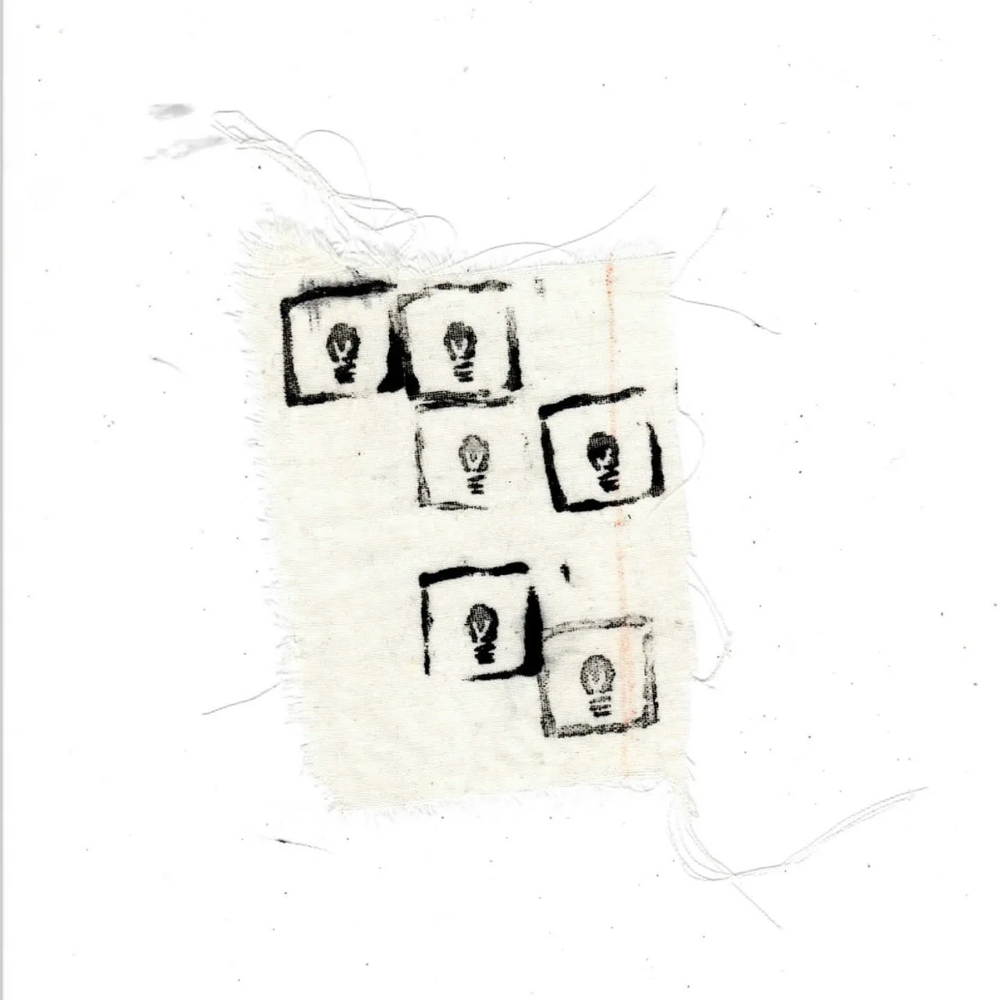

Fashion Design · Portfolio
Designing clothes
with meaning.
Sono una studentessa di Fashion Design interessata alla ricerca, alla sperimentazione dei materiali e alla costruzione di nuove forme.
Esplora i progetti →
01 / 03
Fashion as a form of research.
Attraverso ogni progetto esploro il rapporto tra forma, materia, corpo e identità.


Philosophy